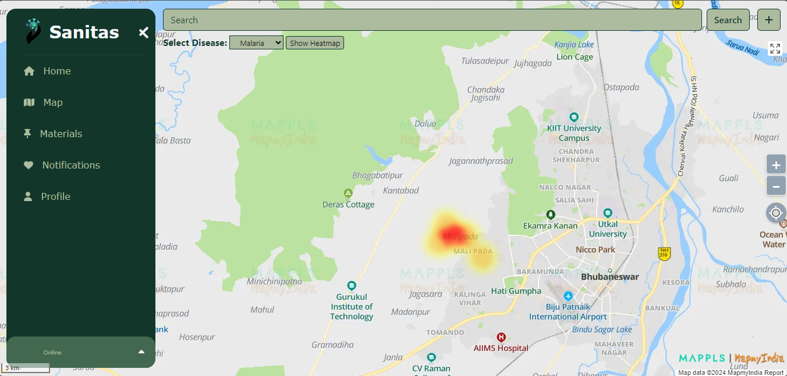
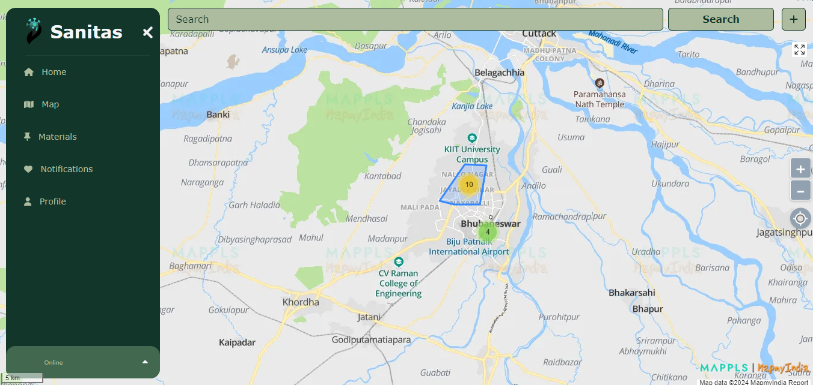
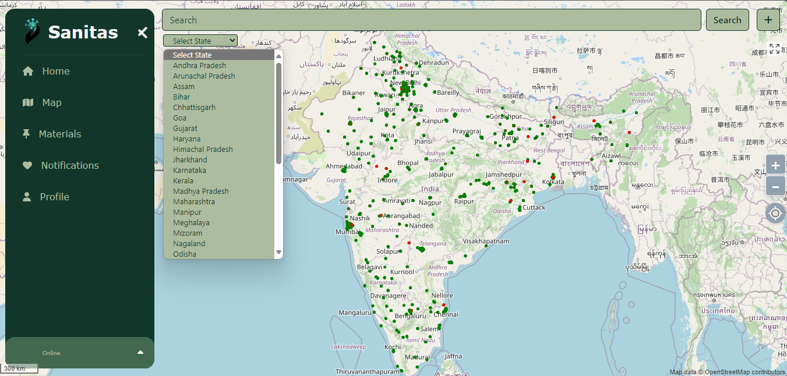
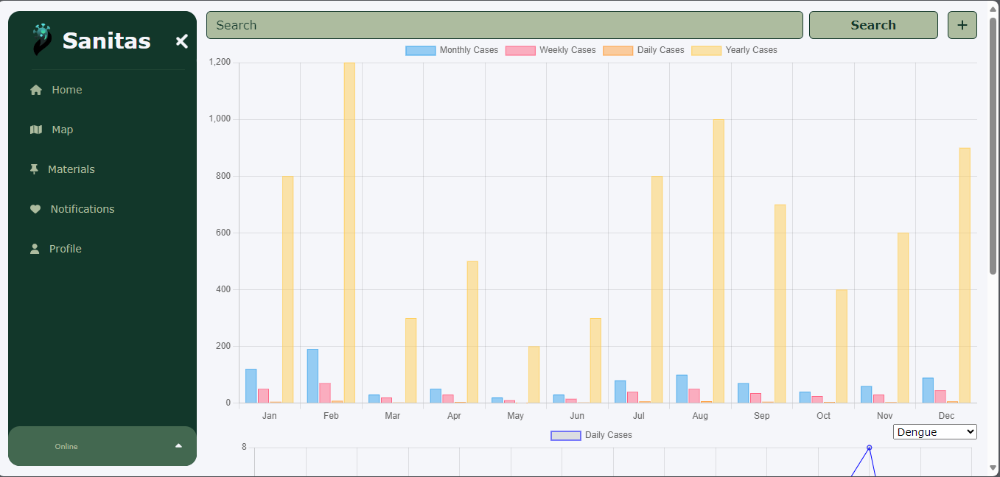

In today's interconnected world, understanding health trends and disease outbreaks in our vicinity is crucial for timely response and preventive measures. To address this need, a cutting-edge mapping system has been developed, integrating advanced technology to display both real-time disease data and predictive analytics. This innovative map not only provides users with a visual representation of disease hotspots but also offers insights into the top five prevalent diseases in the area.
Explore the current heat map of diseases in your area. This map provides real-time data on the prevalence of diseases, helping you stay informed and take necessary precautions.

Find the nearest sanitization stations in your area. This map displays the locations of sanitization stations, helping you maintain hygiene and prevent the spread of diseases.

Check the environmental health of your area. This map provides insights into the environmental factors that may contribute to the spread of diseases, helping you make informed decisions.

Explore the Sanitas data in a more interactive way. This visualization provides a dynamic representation of the disease data, helping you understand the trends and patterns more effectively.
